Erste Schritte
LemmaLoom enthält ein Beispielprojekt namens „Klimadebatte“. Sie können es importieren, um die Werkzeuge der Anwendung auszuprobieren. Die meisten Beispiele in diesem Handbuch stammen aus diesem Projekt. Seine Meinungsbeiträge, Kolumnen und die Rede sind erfunden, ebenso der Bericht und die aufgezeichnete Radiodebatte. Ähnlichkeiten mit realen Personen oder Veröffentlichungen sind zufällig. Die Texte geben niemandes Meinung wieder und sollen Sie von nichts überzeugen.
Um das Beispielprojekt als neues Projekt zu Ihrer Bibliothek hinzuzufügen, wählen Sie Ablage ▸ Importieren ▸ Beispielprojekt. Ein Dialog Beispielprojekt wird importiert zeigt den Stand an. Sobald er sich schließt, wird „Klimadebatte“ Ihr aktives Projekt. Die Sprache des importierten Projekts richtet sich nach der aktuellen Sprache der Benutzeroberfläche von LemmaLoom; es kann also Englisch, Deutsch oder vereinfachtes Chinesisch (Festland) sein. Wie Sie die Sprache der Benutzeroberfläche umstellen, steht unter Unterstützte Sprachen in Kapitel 1, Einführung. Alle Dokumente, Dokumentsets, Codes, Attribute und gesicherten Abfragen, die in diesem Kapitel vorkommen, sind im importierten Projekt vorhanden.
Sie können die Beispiele auch mit einigen eigenen Texten durcharbeiten; wo von den Dokumenten in „Klimadebatte“ die Rede ist, nehmen Sie dann Ihre eigenen.
LemmaLoom zum ersten Mal starten
Beim ersten Start zeigt das Fenster von LemmaLoom drei Spalten (die Seitenleiste, den Lesebereich und den Inspektor). Solange es noch keine Projekte gibt, bleiben Seitenleiste und Inspektor leer. Ebenso sind die vier Tab-Symbole oben im Inspektor deaktiviert, bis ein Projekt angelegt und ein Dokument geöffnet ist. Alle Einstellungen der Anwendung erreichen Sie über LemmaLoom ▸ Einstellungen … (⌘,).
Zwei Einstellungen, die Sie vorab prüfen sollten, finden Sie unter Allgemein. Die erste ist Thema; sie legt das Farbschema für die gesamte Benutzeroberfläche von LemmaLoom fest. Thema kann dem hellen oder dunklen Erscheinungsbild folgen, das auf Ihrem Mac eingestellt ist (System), oder stattdessen Creme, Hoher Kontrast (Dunkel) oder ein anderes Thema verwenden.
Sprache der Benutzeroberfläche bestimmt die Sprache, in der LemmaLoom angezeigt wird, und die Sprache, in der das Beispielprojekt importiert wird. Mit Systemstandard entspricht sie der Sprache Ihres Mac; außerdem stehen English, Deutsch und 简体中文 (vereinfachtes Chinesisch, Festland) zur Wahl. Eine Änderung unter Sprache der Benutzeroberfläche wird wirksam, sobald Sie die Anwendung mit LemmaLoom beenden unter diesem Menü schließen und erneut starten.

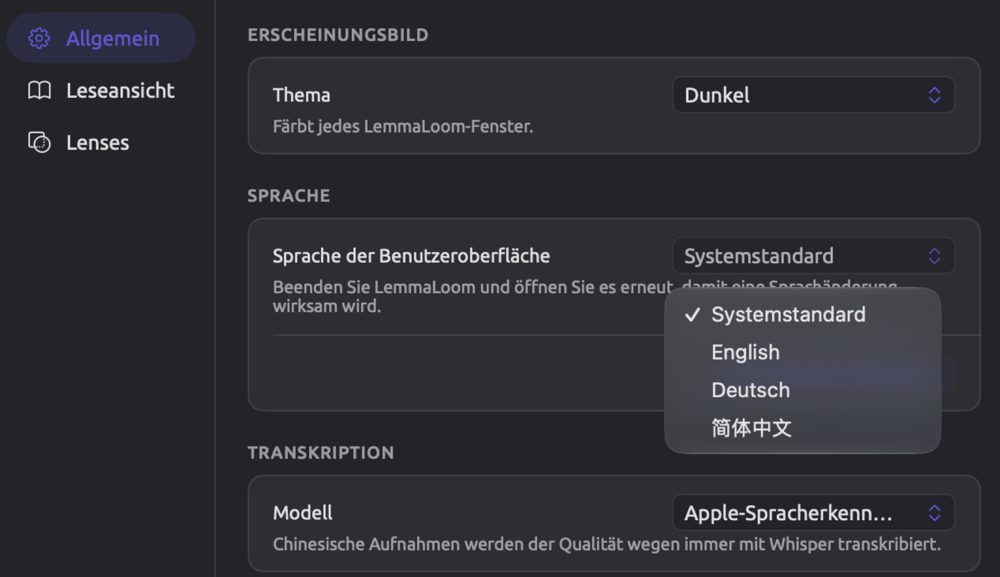
Im Einstellungsfenster enthält Allgemein außerdem das Modell der Spracherkennung für Aufnahmen und die Ausschluss-Voreinstellungen für die Importdialoge. Weitere Bereiche sind Leseansicht (Einstellungen für die Textdarstellung in der Leseansicht) und Lenses, wo Sie die Lens-Stile anpassen können. Kapitel 24, Einstellungen und Darstellung geht das Einstellungsfenster Option für Option durch.
Eine Grammatikanalyse erhalten nur Dokumente auf Englisch, Deutsch oder Chinesisch. Ein Dokument in einer anderen Sprache lässt sich als reiner Text importieren und trotzdem lesen, kodieren und durchsuchen. Braucht ein solches Dokument eine Grammatikanalyse, muss stattdessen eine Übersetzung ins Englische, Deutsche oder Chinesische analysiert werden. Die Analyse beschreibt dann die grammatischen Strukturen der Übersetzung. Wie Sie Übersetzungen in LemmaLoom verwalten, erklärt Kapitel 9, Übersetzungen und geteilte Ansicht.
Kurze Erklärungen der Begriffe, die in der Anwendung vorkommen, finden Sie unter Hilfe ▸ Glossar. Das Glossarfenster kann geöffnet bleiben, während Sie im Hauptfenster arbeiten.
Wie LemmaLoom die Arbeit ordnet
Ihre Bibliothek enthält alles, was Sie in LemmaLoom tun. Im Grunde ist die Bibliothek ein Ordner auf Ihrem Mac. Mehr dazu finden Sie unter Wo die Arbeit gespeichert wird weiter unten.
Jede Studie erhält in der Bibliothek ein eigenes Projekt. Ein Projekt enthält die Texte, die Sie untersuchen, und alles, was bei ihrer Analyse entsteht. Dazu gehören Ihre Codes und deren Kodierungen, Ihre Memos und Verknüpfungen sowie Ihre Sets und Gruppen. Auch Wörterbücher und gesicherte Abfragen liegen dort. Projekte bleiben voneinander getrennt. Eine Abfrage über ein Projekt erfasst nur dessen Dokumente. In der Regel ist es sinnvoll, das gesamte Material einer Studie in einem einzigen Projekt zu halten.
Drei Dinge teilen sich alle Projekte. Tags stammen aus derselben Liste, die Sie über Fenster ▸ Tags erreichen. Abfragen, die für Alle Projekte gesichert sind, stehen in jedem Projekt zur Verfügung; Sie können außerdem mehrere Projekte gleichzeitig abfragen. Wie das geht, beschreibt Projektübergreifend arbeiten in Kapitel 3, Projekte und Dokumente. Analysatoren, die Sie für LemmaLoom entwickeln, sind kleine Skripte, die Ihre Textstellen annotieren. Sie stehen über Fenster ▸ Analysatoren in jedem Projekt zur Verfügung. Wie Analysatoren in LemmaLoom funktionieren, beschreibt Kapitel 20, Eigene Analysatoren.
Jeder importierte Text bildet ein Dokument in einem Projekt. Ein Dokument kann ein Zeitungsbeitrag, eine Rede oder der Inhalt einer PDF-Datei sein, ebenso ein Artikel von einer Webseite oder das Transkript einer Audio- oder Videoaufnahme. Wenn Sie ein Dokument importieren, legt LemmaLoom eine eigene Kopie davon an, die unabhängig von Änderungen an anderer Stelle bestehen bleibt. Korrekturen nehmen Sie direkt in LemmaLoom vor, wobei die Bearbeitungsmöglichkeiten recht begrenzt sind. Als Faustregel gilt deshalb, nur Dokumente zu importieren, die fertig sind oder kaum noch geändert werden. Größere Änderungen nehmen Sie besser außerhalb von LemmaLoom vor. Den bearbeiteten Text fügen Sie dann in den Editor von LemmaLoom ein, oder Sie importieren das Dokument erneut, sobald die Änderungen abgeschlossen sind.
Wenn Sie Dokumente in ein Projekt importieren, verarbeitet LemmaLoom sie im Hintergrund. Dieser Schritt heißt Indizierung. Dabei wird der Text in Sätze und Wörter zerlegt und die grammatische Struktur jedes Satzes ermittelt. LemmaLoom bestimmt die Grundform jedes Wortes, also sein Lemma; das Lemma von läuft und lief ist laufen. Außerdem bestimmt LemmaLoom die Wortklassen (Nomen, Verben usw.). Mehr zur Indizierung erfahren Sie in Kapitel 21, Analyse und Indizierung. Wortskizzen, Lenses, die meisten Abfragen und der Tab Grammatik des Inspektors bauen auf den Ergebnissen der Indizierung auf. Lesen und Kodieren setzen sie nicht voraus; beides ist also schon vor dem Abschluss der Indizierung möglich. Wie lange die Indizierung dauert, hängt von der Größe des Dokuments und von der Leistung Ihres Computers ab.
Das Hauptfenster von LemmaLoom zeigt jeweils ein Projekt, Ihr aktives Projekt. Die geöffneten Tabs jedes Projekts, Ihre Position in jedem Dokument und die gewählten Lenses bleiben von Sitzung zu Sitzung erhalten.
Ein Projekt anlegen
Ein Projekt braucht nur einen Namen. Sie können ihm aber auch eine Farbe, Tags und die Attribute geben, die alle seine Dokumente gemeinsam haben. Attribute halten zu jedem Dokument eine sachliche Angabe fest, etwa das Erscheinungsdatum oder die Haltung, die ein Text vertritt. Ein Attribut gilt für das ganze Projekt und kann in jedem Dokument einen Wert haben. Wenn Sie die Attribute schon beim Anlegen des Projekts festlegen, können Sie die Werte gleich beim Import der Dokumente eintragen. Die Werte der Attribute dienen später dazu, Dokumente nach diesen Merkmalen zu gruppieren und zu vergleichen. Legen Sie deshalb die Angaben als Attribute an, die einen Vergleich lohnen.
Tags können Sie Projekten und Dokumenten zur Ordnung zuweisen; sie haben keinen Wert, und ein Tag bedeutet, was Sie festlegen.
„Klimadebatte“ definiert vier Attribute:
| Name | Typ | Wahlmöglichkeiten | Zweck |
|---|---|---|---|
| Haltung | Auswahl | Aktivismus, Skepsis, Neutral | Die beiden Seiten der Debatte vergleichen, dazu die Quellen, die über sie berichten, ohne Partei zu ergreifen |
| Reichweite | Ganzzahl | Viel gelesene Texte auswählen, wie es das intelligente Set „Große Reichweite“ tut | |
| Erscheinungsdatum | Datum | Jeden Text zeitlich einordnen | |
| Medium | Text | Festhalten, wo jeder Text erschienen ist |
Jedes Attribut hat einen Datentyp. Welche Typen es gibt und wie Sie den Typ eines Attributs ändern, beschreibt Kapitel 8, Sets, Gruppen, Tags und Attribute. „Haltung“ ist ein Beispiel für den Typ Auswahl, der nur die Wahlmöglichkeiten annimmt, die Sie aufzählen. Wenn sich die Werte nicht im Voraus aufzählen lassen, wie bei den Medien in „Klimadebatte“, verwenden Sie Text. Attribute vom Typ Ganzzahl speichern ganze Zahlen, Dezimalzahl speichert Zahlen mit Nachkommastellen und Boolescher Wert Ja-oder-Nein-Werte.
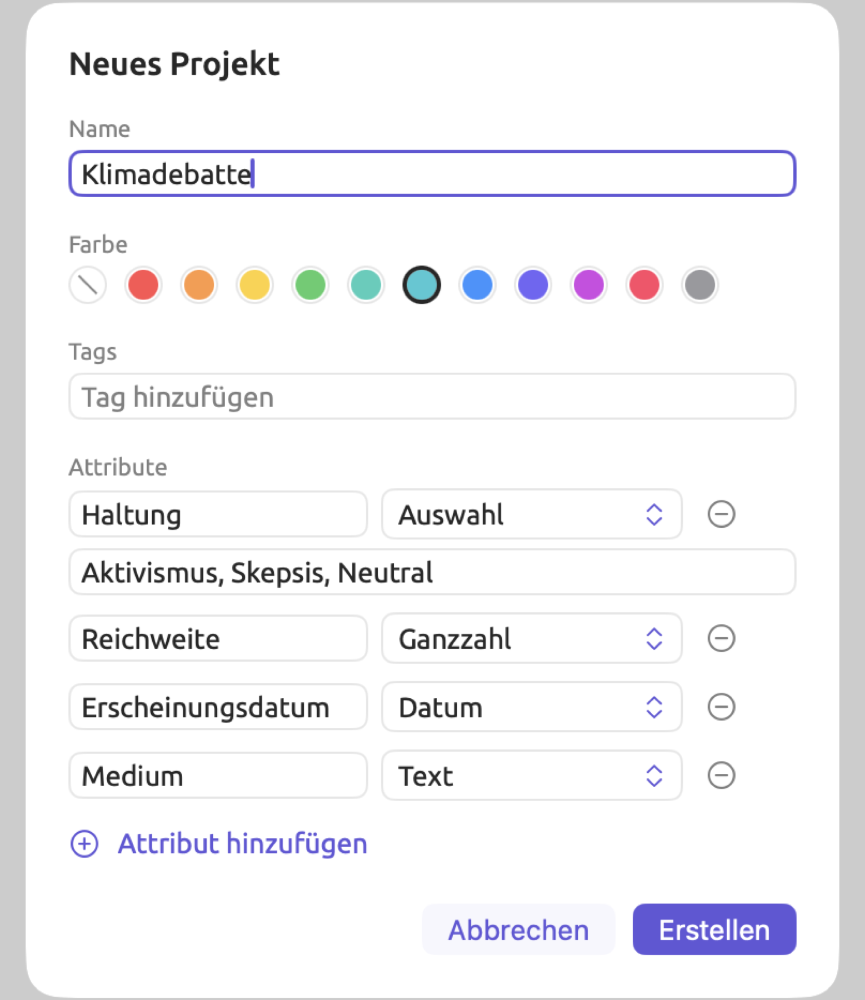
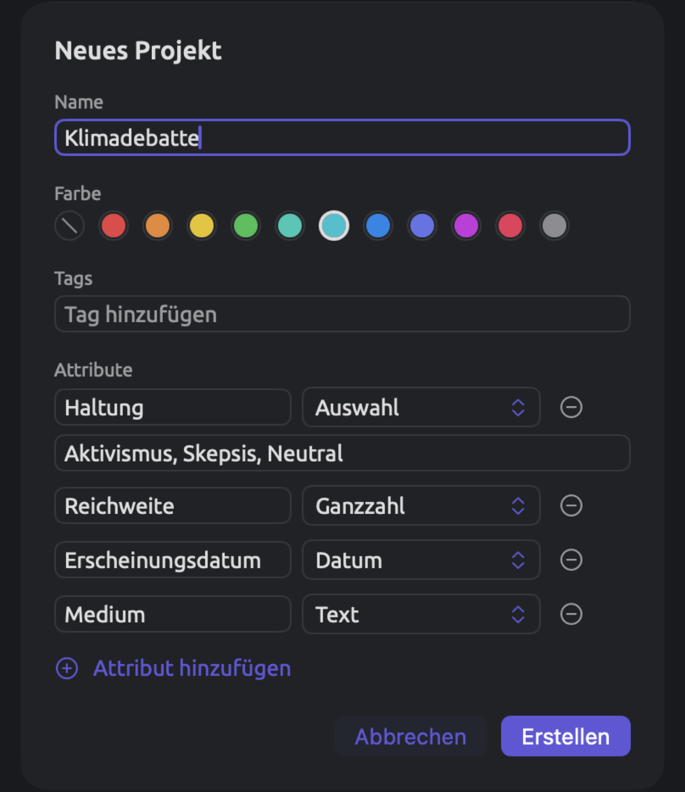
So legen Sie ein Projekt an:
- Wählen Sie Ablage ▸ Neues Projekt (⇧⌘N).
- Geben Sie unter Name den Namen des Projekts ein. Bleibt das Feld leer, heißt das Projekt „Neues Projekt“.
- Klicken Sie unter Farbe auf eine Farbe, wenn Sie eine möchten. Sie färbt das Symbol des Projekts in der Seitenleiste.
- Geben Sie unter Tags ein Tag ein und drücken Sie den Zeilenschalter oder tippen Sie ein Komma. Tags stammen aus einer Liste, die alle Ihre Projekte gemeinsam nutzen.
- Klicken Sie unter Attribute für jedes Attribut einmal auf Attribut hinzufügen. Geben Sie in der neuen Zeile den Namen in das linke Feld ein und wählen Sie im Menü einen Typ. Bei einer Auswahl (einer festen Liste von Wahlmöglichkeiten) geben Sie jede Wahlmöglichkeit in eine eigene Zeile unter Name und Typ ein; Auswahlmöglichkeit hinzufügen fügt eine Zeile hinzu.
- Klicken Sie auf Erstellen.
Das neue Projekt erscheint in der Seitenleiste unter Projekte und wird sofort zum aktiven Projekt.
Um zwischen Projekten zu wechseln, wählen Sie eines unter Projekte aus. Oben in der Seitenleiste steht Favoriten mit den Projekten, die Sie schnell erreichen möchten. Um ein Projekt zu den Favoriten hinzuzufügen, halten Sie den Mauszeiger darauf und klicken Sie auf den Stern, der dann erscheint. Ein Rechtsklick auf ein Projekt bietet unter anderem Umbenennen, Eigenschaften und Attribute. Kapitel 3, Projekte und Dokumente beschreibt alle diese Befehle.
Dokumente importieren
LemmaLoom kann vier Arten von Quellen importieren:
- reine Textdateien,
- PDF-Dateien,
- Audio- und Videodateien und
- Webseiten über Ablage ▸ Importieren ▸ Webseiten (⌥⇧⌘I).
Im Beispielprojekt „Klimadebatte“ sind alle vier Arten vertreten. Meinungsbeiträge, Kolumnen, Blogbeiträge und eine Rede wurden als reiner Text importiert, „Hitzebericht 2024“ dagegen aus einer PDF-Datei. „Radiodebatte“ stammt aus einer Audiodatei, und „Streit um die CO2-Steuer“ wurde als Webseite importiert. Alle importierten Dokumente tragen ihr Erscheinungsdatum und Werte für die Attribute des Projekts. „Uns läuft die Zeit davon“ etwa ist am 21. August 2024 erschienen. Bei „Haltung“ hat es den Wert „Aktivismus“. Seine „Reichweite“ beträgt 412.000, und das Dokument gehört zur Gruppe „Print“.
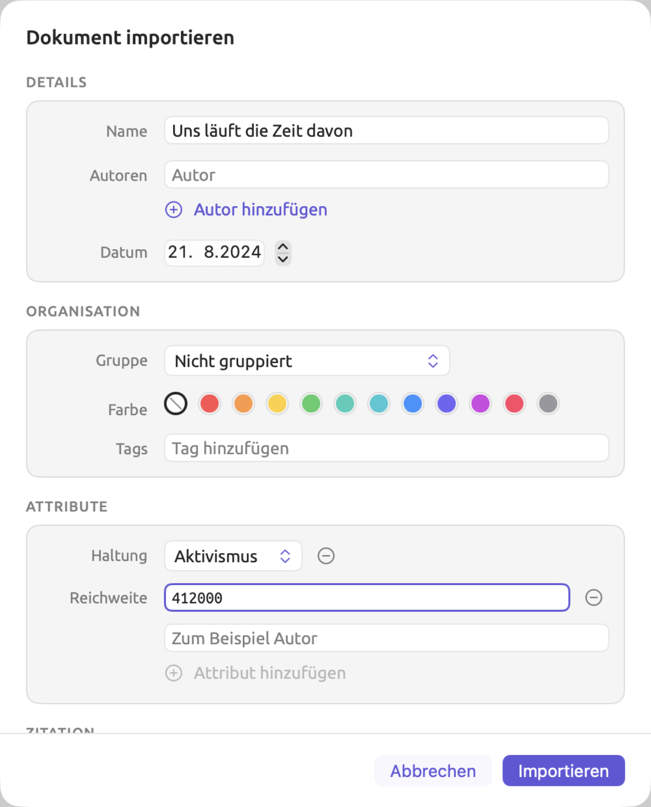
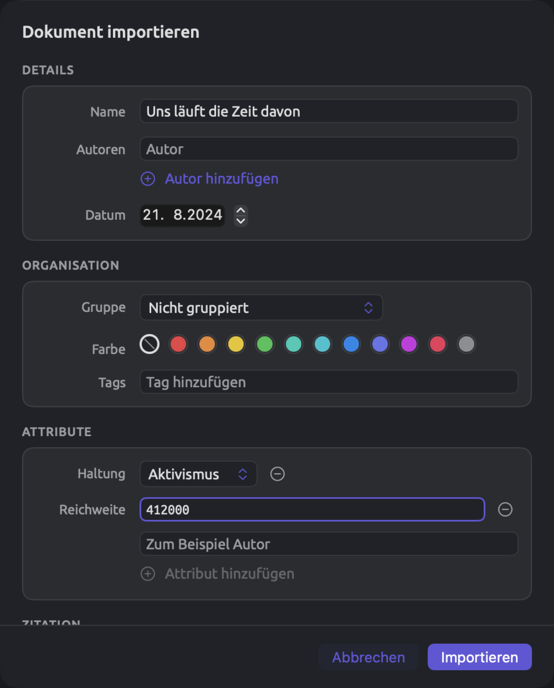
So importieren Sie eine Textdatei:
- Vergewissern Sie sich, dass das gewünschte Projekt aktiv ist (sein Name ist unter Projekte fett gesetzt).
- Wählen Sie Ablage ▸ Importieren ▸ Dokumente (⇧⌘I).
- Wählen Sie die Datei aus und klicken Sie auf Öffnen. Sie können auch mehrere Dateien auf einmal auswählen.
- Der Dialog Dokument importieren öffnet sich. Prüfen Sie die unten beschriebenen Angaben und klicken Sie auf Importieren.
Unter Organisation ordnen Sie das Dokument einer Gruppe des Projekts zu oder lassen es Nicht gruppiert, geben ihm eine Farbe und fügen Tags hinzu. Eine Gruppe verhält sich in der Seitenleiste ähnlich wie ein Ordner; sie fasst Dokumente einer Art zusammen, so wie „Print“ und „Online“ in „Klimadebatte“. Ein Dokument kann gleichzeitig zu vielen Sets gehören, aber nur zu genau einer Gruppe (sofern es nicht ungruppiert ist). Gruppen dienen vor allem der Ordnung in der Seitenleiste, während Sets und intelligente Sets auch Aufgaben in der Analyse haben.
Unter Attribute tragen Sie die Werte des Dokuments für die Attribute des Projekts ein. Sobald Sie den Namen eines Attributs zu tippen beginnen, erscheint eine Liste mit Vorschlägen, die vorhandene Attribute mit ihrem Typ zeigt („Haltung · Auswahl“). Klicken Sie auf Attribut hinzufügen und wählen oder tippen Sie den Wert dann in der Zeile, die erscheint.
Sie können hier auch ein neues Attribut anlegen. Geben Sie dazu einen Namen ein, den es im Projekt noch nicht gibt; neben dem Namen öffnet sich dann ein Menü, in dem Sie den Typ des Attributs festlegen. Bei einer Auswahl tippen Sie jede Wahlmöglichkeit in eine eigene Zeile. Sie können die Werte auch später eintragen, für viele Dokumente auf einmal oder Dokument für Dokument in der Facette Details des Tabs Text. Mehr dazu finden Sie unter Attributwerte eintragen weiter unten.
Indizierung legt fest, ob und wie dieses Dokument indiziert wird. Sprache steht zunächst auf Automatisch; LemmaLoom versucht dann, die Sprache am Inhalt des Dokuments zu erkennen. Wenn die Erkennung ungenau sein könnte, stellen Sie die Sprache von Hand auf Englisch, Deutsch oder Chinesisch. Das hilft etwa bei einem sehr kurzen Text, der eine andere Sprache enthält.
Für die Grammatikanalyse indizieren ist anfangs aktiviert. Deaktivieren Sie die Option, wenn Sie das Dokument nur lesen oder kodieren und nicht indizieren möchten. Auch die Indizierung eines großen Dokuments können Sie so auf später verschieben. Die Schaltfläche Jetzt indizieren in der Statusleiste am unteren Rand der Leseansicht startet die Indizierung dann. Weiter unten, unter Analysatoren, aktivieren Markierungsfelder bestimmte Analysen. Dazu gehören die eingebauten Analysatoren Kohäsion, Metadiskurs und Rhetorik sowie alle, die Sie selbst geschrieben haben; anfangs sind alle ausgewählt. Wenn Sie ein Markierungsfeld abwählen, ist dieser Analysator für das Dokument deaktiviert.
Von der Indizierung ausschließen enthält Muster aus regulären Ausdrücken für Text, der in der Analyse nicht mitzählen soll. Die häufigsten Beispiele sind Sprecherangaben und Zeitstempel. Gebraucht wird das Feld vor allem bei Transkripten. Kapitel 4, Material importieren nennt einige gängige Muster zum Ausschließen. Reguläre Ausdrücke sind eine eigene Schreibweise, mit der sich Textmuster beschreiben lassen. Ein Beispiel dafür ist \[\d+:\d+:\d+\]; dieses Muster steht für drei durch Doppelpunkte getrennte Zahlen in eckigen Klammern, etwa [00:12:31]. Geben Sie ein Muster selbst ein und klicken Sie auf Hinzufügen, oder wählen Sie eines unter Voreinstellungen; dort steht unter anderem Zeitstempel [hh:mm:ss] (genau dieses Muster). Der erfasste Text bleibt in der Leseansicht sichtbar und lässt sich weiterhin kodieren, zählt aber in der Analyse nicht mit.


Wenn Sie mehrere Dateien auf einmal importieren, erscheint der Dialog einmal für jede Datei und zeigt oben rechts die Position der Datei an (etwa 2 von 10). Überspringen geht zur nächsten Datei, ohne die aktuelle zu importieren. Abbrechen beendet den Import aller übrigen Dateien, die Sie noch nicht bestätigt haben. Bereits bestätigte Dateien werden trotz des Abbruchs importiert.
Nach dem Import
Ihr Dokument finden Sie in der Seitenleiste unter Dokumente. Hinter seinem Namen steht das Kürzel der erkannten oder gewählten Sprache, etwa DE. Während der Indizierung ist der Titel abgeblendet, und daneben steht eine Anzeige, die sich im Lauf des Vorgangs füllt. Wenn die Indizierung abgeschlossen ist, verschwindet die Anzeige.
Das Aktivitätsfenster (Fenster ▸ Aktivität, ⌥⌘0) verfolgt, was in all Ihren Projekten geschieht, und ordnet die Dokumente nach ihrem Status in die Listen Import, Übersetzung, Indizierung, Fehlgeschlagen und Wartend ein. Neben dem Projektmenü des Aktivitätsfensters steht ein Menü Importieren, mit dem Sie Dokumente oder Webseiten in Ihre Projekte importieren.
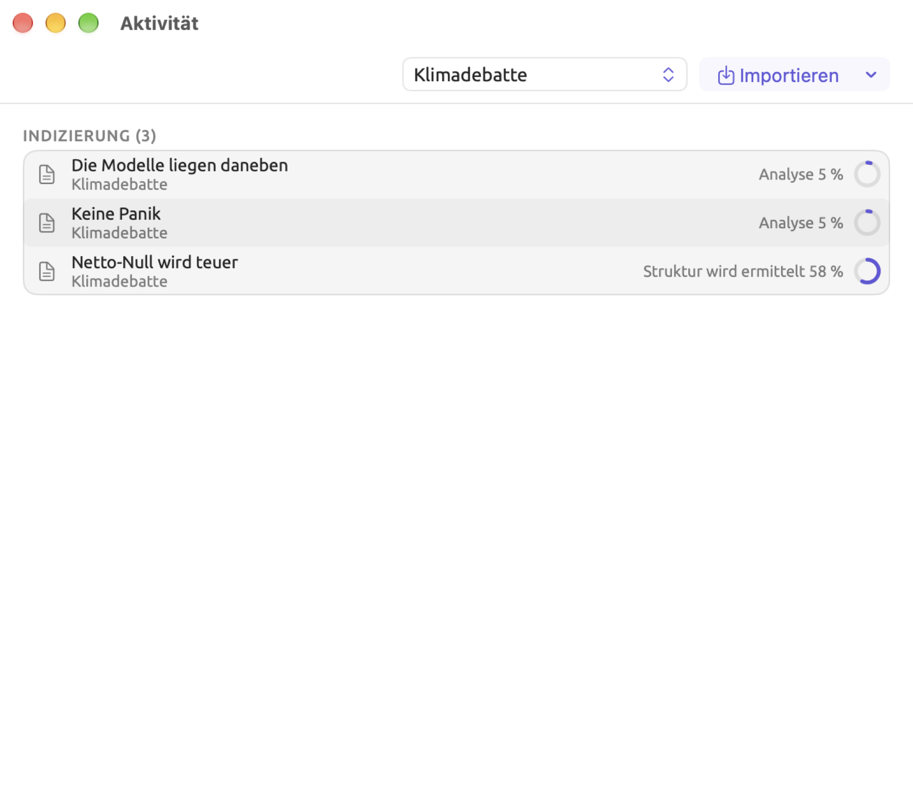
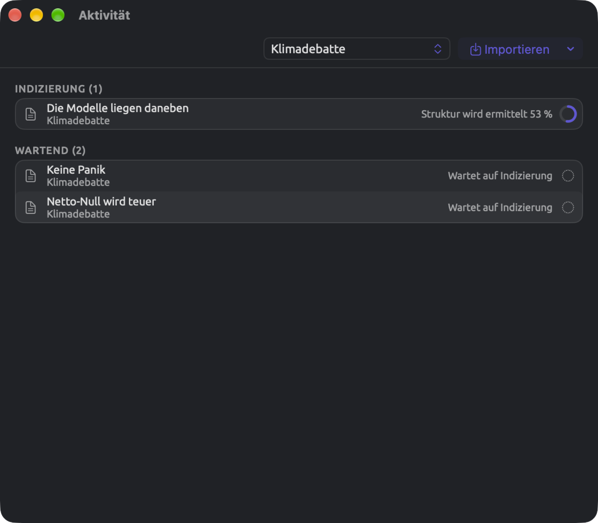
Ein Klick auf die Zeile des Dokuments in der Seitenleiste öffnet es in einem eigenen Tab. Seinen Text sehen Sie in der Leseansicht auch ohne Indizierung, doch bis die Indizierung abgeschlossen ist, gilt Folgendes:
- Das Lens-Menü in der Titelleiste ist deaktiviert und zeigt den Tooltip Lenses stehen zur Verfügung, sobald die Indizierung abgeschlossen ist.
- Der Tab Grammatik und die Facette Skizzenraum des Tabs Multimodus im Inspektor zeigen Die Grammatik wird verfügbar, sobald die Indizierung abgeschlossen ist.
- Im Tab Text steht statt der Statistiken Statistiken werden verfügbar, sobald die Indizierung abgeschlossen ist.
- Die Statusleiste unter der Leseansicht zeigt den aktuellen Arbeitsschritt, etwa Struktur wird ermittelt, und einen Prozentsatz.
Kann LemmaLoom die Sprache eines Dokuments nicht indizieren, erscheint neben seinem Titel in der Seitenleiste ein Fragezeichen. Die Statusleiste zeigt dann zum Beispiel Keine Grammatikanalyse für Französisch.
Ein Rundgang durch das Hauptfenster
Das Hauptfenster zeigt links die Seitenleiste, daneben den Lesebereich und rechts den Inspektor. In der Seitenleiste wählen Sie das Projekt, das Sie öffnen möchten, und erreichen seine Dokumente, Sets und Detailansichten. Am oberen Rand des Lesebereichs liegt eine Reihe von Tabs und darüber die Titelleiste, die die Bedienelemente für das Dokument im aktiven Tab enthält. Im Lesebereich zeigt die Leseansicht den Inhalt des aktiven Tabs, also das Dokument selbst oder eine Detailansicht. Am unteren Rand liegt die Statusleiste, die die Position des ausgewählten Textes und den Umfang des Dokuments zeigt. Der Inspektor schließlich beschreibt das aktive Dokument und bietet weitere Werkzeuge, um es zu untersuchen.
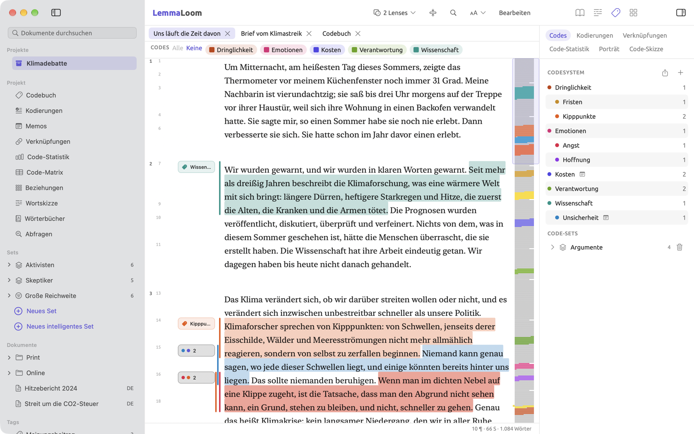
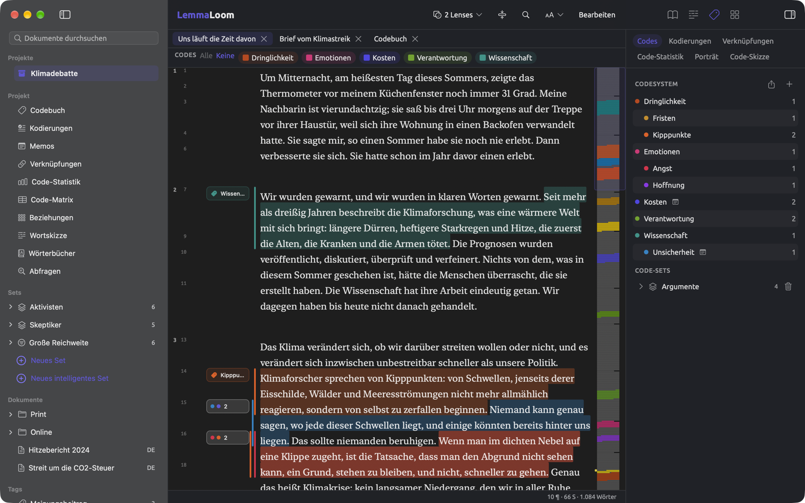
Manche Schaltflächen sind hier deaktiviert. Sie betreffen das ausgewählte Dokument oder den ausgewählten Tab nicht oder sind dafür noch nicht verfügbar. Wenn Sie den Mauszeiger auf eine solche Schaltfläche halten, sehen Sie, warum sie deaktiviert ist.
Die Seitenleiste
Dokumente durchsuchen steht über dem Rest der Seitenleiste und unter den Fensterknöpfen. Wenn Sie Text in das Feld tippen, zeigt die Seitenleiste nur noch die Dokumente des aktiven Projekts, deren Titel diesen Text enthalten. Der Zeilenschalter öffnet den ersten Treffer, Esc setzt das Feld zurück. Bearbeiten ▸ Dokument suchen (⇧⌘F) setzt den Fokus in das Feld Dokumente durchsuchen. Ist die Seitenleiste eingeklappt, klappt der Befehl sie zuerst auf.
Unter Dokumente durchsuchen folgt eine in Abschnitte gegliederte Liste. Ihr erster Abschnitt ist Favoriten. Er erscheint, sobald Sie Ihr erstes Projekt mit einem Stern versehen, und enthält jedes Projekt mit Stern. Darunter finden Sie unter Projekte alle Projekte Ihrer Bibliothek. Ein Klick auf ein Projekt macht es zum aktiven Projekt, und Projekt listet zehn Bereiche des aktiven Projekts auf. Diese Bereiche reichen von Codebuch und Kodierungen bis zu Abfragen, jeder öffnet sich als Detailansicht in einem Tab der Leseansicht, und zusammen bilden sie das Projektregal; genauer beschreibt es Das Projektregal weiter unten.
Sets enthält alle Sets des aktiven Projekts, jeweils mit Namen und Zahl der Dokumente. Ein Klick auf den Namen eines Sets öffnet es in einem Tab. Ein Klick auf sein Dreiecksymbol zeigt alle Mitglieder des Sets. Mit Neues Set und Neues intelligentes Set am Ende des Abschnitts legen Sie Sets an. Dokumente enthält die Dokumente des aktiven Projekts. Zuerst erscheinen die Gruppen als Ordner, danach die übrigen Dokumente. Jede Übersetzung steht unter ihrem Originaldokument. Ganz unten enthält Tags alle Tags, die Sie den Dokumenten dieses Projekts zugewiesen haben, jeweils gefolgt von der Zahl der Dokumente mit diesem Tag. Der Abschnitt erscheint erst, wenn mindestens ein Dokument ein Tag trägt. Ein Klick auf ein Tag öffnet seine Dokumente in einem Tab, ähnlich wie bei einem Set.
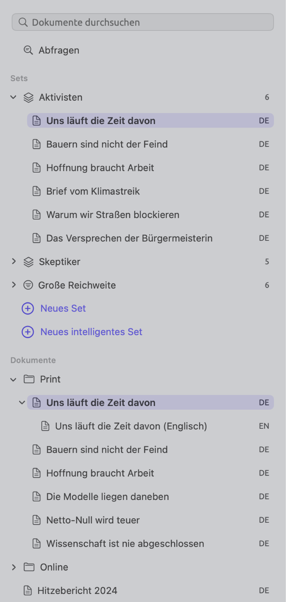
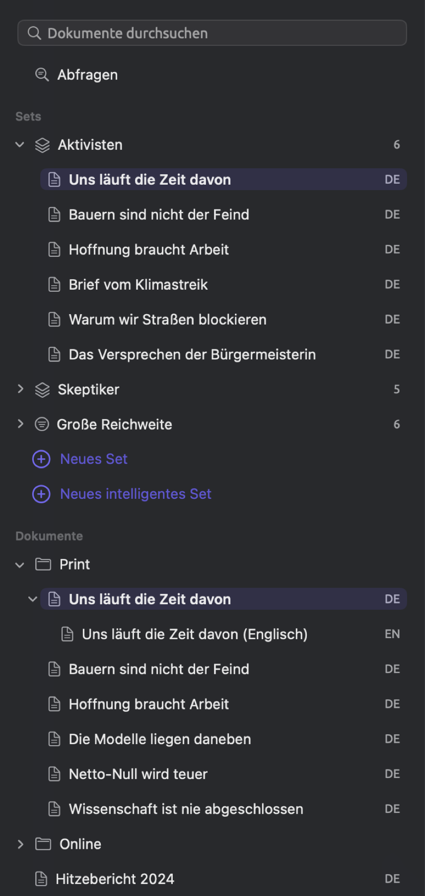
Jede Dokumentzeile zeigt ein Symbol für die Art des Dokuments. Hat das Dokument eine Farbe, ist das Symbol damit getönt. Es folgen der Titel des Dokuments, das Sprachkürzel und bei Bedarf ein Kennzeichen für die Indizierung. Lässt eine Lens oder Abfrage ein bestimmtes Dokument aus, sehen Sie nach, ob es ein Kennzeichen trägt. Eine Zeile ohne Kennzeichen ist indiziert. Die Kennzeichen bedeuten Folgendes:
| Kennzeichen | Bedeutung |
|---|---|
| Fortschrittsring | Wird indiziert; halten Sie den Mauszeiger darauf, um Arbeitsschritt und Prozentsatz zu sehen |
| Gepunkteter Kreis | Wartet auf Indizierung |
| Pausensymbol | Indizierung ist aus für dieses Dokument |
| Fragezeichen | Sprache wird für die Indizierung nicht unterstützt |
| Rotes Dreieck | Die Indizierung ist fehlgeschlagen; klicken Sie mit der rechten Maustaste auf das Dokument und wählen Sie Indizierung wiederholen |
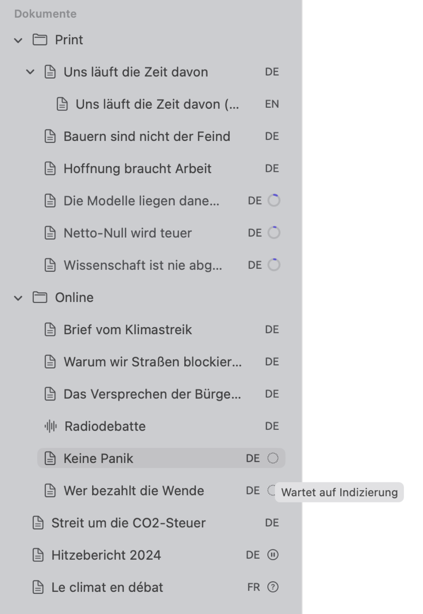
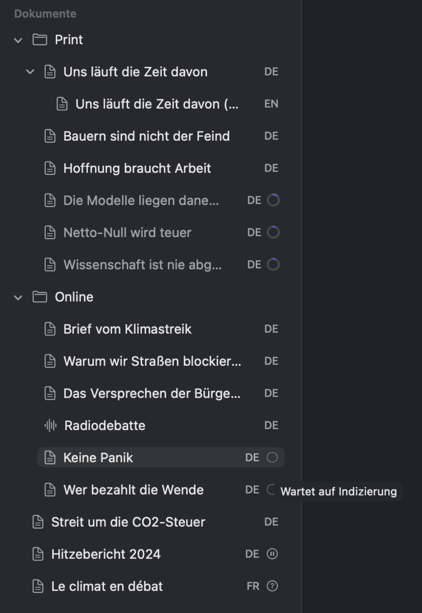
Um ein Dokument zu öffnen, klicken Sie in der Seitenleiste darauf. Mit der Tastatur bewegen Sie sich mit ↑ und ↓ durch die Zeilen und öffnen die hervorgehobene Zeile mit dem Zeilenschalter. Mehrere Zeilen wählen Sie aus, indem Sie beim Klicken ⌘ oder ⇧ gedrückt halten. Ein Rechtsklick auf ein Dokument in der Seitenleiste zeigt die Befehle für diese Zeile, darunter In geteilter Ansicht öffnen, Umbenennen, In Gruppe verschieben, Sets, Eigenschaften, Übersetzen, Exportieren und Dokument löschen. Sind mehrere Zeilen ausgewählt, gibt es Befehle, um sie zu einem Set hinzuzufügen (Zu Set hinzufügen) oder die ausgewählten Dokumente zu löschen (Dokumente löschen).
Das Menü Projekt in der Menüleiste enthält mehrere dieser Befehle für die Zeile, die gerade in der Seitenleiste ausgewählt ist. Außerdem bietet es Befehle, um Sets (Neues Set) und intelligente Sets (Neues intelligentes Set) anzulegen und Codes hinzuzufügen (Code hinzufügen). Sein Löschbefehl (⌘⌫) löscht, was ausgewählt ist, also ein Projekt, ein Set, eine Gruppe oder Dokumente.
Das Projektregal
Alles, was Sie über Projekt öffnen, erscheint als eigene Detailansicht in einem Tab. Die Detailansicht enthält Informationen über das ganze Projekt. Über das Projektregal arbeiten Sie also mit allen Ihren Dokumenten zugleich.
| Bereich | Was er zeigt | Beschrieben in |
|---|---|---|
| Codebuch | Die Codes des Projekts als Baum, in dem Sie sie anlegen, bearbeiten und ordnen | Kapitel 7, Kodieren |
| Kodierungen | Jede kodierte Textstelle im Projekt mit ihrem Dokument und Code | Kapitel 13, Codes auswerten |
| Memos | Die Memos des Projekts | Kapitel 7, Kodieren |
| Verknüpfungen | Verknüpfungen zwischen Textstellen | Kapitel 7, Kodieren |
| Code-Statistik | Wie oft jeder Code vergeben ist und wie viel Text er abdeckt | Kapitel 13, Codes auswerten |
| Code-Matrix | Eine Tabelle, die Codes den Dokumenten oder Gruppen von Dokumenten gegenüberstellt | Kapitel 13, Codes auswerten |
| Beziehungen | Eine Tabelle, die zeigt, wie oft jedes Codepaar gemeinsam vorkommt | Kapitel 13, Codes auswerten |
| Wortskizze | Die Wörter, mit denen sich ein Wort grammatisch verbindet, etwa die Verben, die Klima als Subjekt haben, wie verändern in das Klima verändert sich, im ganzen Projekt | Kapitel 12, Wortskizze |
| Wörterbücher | Wortlisten mit Kategorien, etwa eine Liste von Heckenausdrücken | Kapitel 19, Wörterbücher |
| Abfragen | Der Abfrageeditor, angewandt auf das ganze Projekt | Kapitel 15, Eine Abfrage erstellen |
Wenn Sie mit einem bestimmten Teil eines Projekts arbeiten, öffnen Sie ein Set. Sein Tab bietet dieselben zehn Bereiche, bezogen auf das Set statt auf das ganze Projekt. Mit der Reihe von Schaltflächen am oberen Rand wechseln Sie schnell zwischen den Bereichen. In schmaleren Fenstern wird aus dieser Reihe ein Menü, dessen Titel der Name des ausgewählten Bereichs ist.
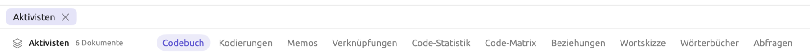
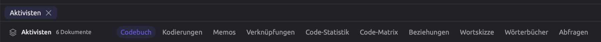
Der Kopf einer Detailansicht ist eine einzige Zeile. Links steht der Name des Bereichs, rechts stehen seine Werkzeuge, etwa ein Suchfeld. Mit der Schaltfläche In einem Fenster öffnen halten Sie eine Detailansicht neben Ihrem Dokument offen. Diese Schaltfläche sitzt ganz rechts im Kopf. Fenster ▸ Codebuch und Fenster ▸ Abfragen öffnen die beiden Bereiche in eigenen Fenstern. Über Projekt ▸ Öffnen öffnen Sie jeden Bereich des Regals in einem eigenen Tab.
Dokument-Tabs
Jedes geöffnete Dokument, jede Detailansicht und jedes Set hat einen eigenen Tab in der Reihe über der Leseansicht. Das × auf einem Tab schließt diesen Tab.
Für einen kurzen Blick öffnen Sie einen Vorschau-Tab, indem Sie auf einen Treffer in den Ergebnissen einer Abfrage oder auf einen Beleg in einer Wortskizze klicken. Die Titel von Vorschau-Tabs sind kursiv. Die nächste Vorschau ersetzt den Vorschau-Tab automatisch. Um den Vorschau-Tab zu behalten, klicken Sie auf den Tab selbst.
| Befehl | Kurzbefehl |
|---|---|
| Ablage ▸ Tab schließen | ⌘W |
| Fenster ▸ Vorherigen Tab anzeigen | ⇧⌘[ |
| Fenster ▸ Nächsten Tab anzeigen | ⇧⌘] |
Ein Rechtsklick auf einen Tab bietet an, das Dokument in einem neuen Fenster (In neuem Fenster öffnen) oder in der geteilten Ansicht (In geteilter Ansicht öffnen) zu öffnen. Die geteilte Ansicht zeigt das ausgewählte Dokument neben dem aktiven Dokument. Verwenden Sie sie, um zwei Dokumente nebeneinander zu vergleichen oder eine Übersetzung neben ihrem Ausgangsdokument zu lesen. Näheres dazu steht in Kapitel 9, Übersetzungen und geteilte Ansicht. Das Menü Fenster bietet dieselben Befehle.
Die Leseansicht
Die Leseansicht zeigt das Dokument des aktiven Tabs als Text. Links neben dem Text liegt die Randspalte. Sie zeigt Absatznummern, Satznummern und farbige Balken neben jeder kodierten Textstelle. Ein Klick auf eine Absatznummer wählt den ganzen Absatz aus, ein Klick auf eine Satznummer den Satz und ein Klick auf einen Balken die zugehörige Textstelle.
Am rechten Rand der Leseansicht liegt die Dokumentübersicht. Wie eine farbcodierte Bildlaufleiste zeigt sie, wo Sie sich im Dokument befinden. Anders als eine Bildlaufleiste zeigt sie außerdem, wo die aktivierten Lenses, die Lesezeichen und die Suchtreffer liegen. Ein Klick oder Ziehen an einer beliebigen Stelle der Dokumentübersicht führt direkt zu diesem Teil des Dokuments, und wenn Sie den Mauszeiger darauf halten, sehen Sie eine Vorschau des Textes an dieser Stelle.
Sie wählen Text aus, indem Sie über eine Textstelle beliebiger Länge klicken und ziehen oder indem Sie auf ein Wort klicken. In einem indizierten Dokument wählt ein Klick auf ein Wort nur dieses Wort aus. Der Tab Grammatik des Inspektors zeigt dann grammatische Angaben zu diesem Wort. Ein erneuter Klick auf dasselbe Wort hebt die Auswahl auf. Im Transkript einer Aufnahme springt die Wiedergabe mit einem Klick auf ein Wort an die Stelle der Datei, an der dieses Wort vorkommt.
Solange in Ihrem Dokument etwas ausgewählt ist, erscheint am unteren Rand der Leseansicht die Auswahlleiste. Ganz links steht der Anfang des ausgewählten Textes in Anführungszeichen, gefolgt von Lesezeichen, Code, Zum Wörterbuch hinzufügen, Memo und Verknüpfung. Zum Wörterbuch hinzufügen erscheint nur in Projekten mit einem Wörterbuch. Wie Sie Codes vergeben, beschreibt Codes vergeben weiter unten in diesem Kapitel ausführlich. Im Menü Dokument finden Sie ebenfalls die Befehle Lesezeichen (⇧⌘B), Code (⇧⌘C), Memo (⇧⌘M) und Verknüpfung (⇧⌘L). Esc oder ein Klick auf das × in der Auswahlleiste hebt die Auswahl auf.
Die Statusleiste verläuft am unteren Rand der Leseansicht. Links zeigt sie die Position des ausgewählten Textes. Bei einem ausgewählten Wort steht dort etwa ¶ 4 · S 17 · T 3, also Absatz 4, Satz 17 des Dokuments und das dritte Token darin (Satzzeichen werden als Tokens mitgezählt). Bei einer ausgewählten Textstelle zeigt die Statusleiste, wie viele Tokens sie umfasst, sowie ihren Anfang und ihr Ende. Rechts zeigt sie den Umfang des Dokuments in Absätzen, Sätzen und Wörtern; während der Indizierung zeigt sie dort stattdessen deren Fortschritt.
Die Titelleiste
Die Titelleiste verläuft am oberen Rand des Lesebereichs, auf gleicher Höhe wie die Fensterknöpfe. Links zeigt sie den Namen LemmaLoom. Rechts sitzen die Bedienelemente für das Dokument im aktiven Tab, von links nach rechts:
- Das Lens-Menü. Sind keine Lenses aktiviert, zeigt es Lens; ist eine Lens aktiviert, zeigt es deren Namen; sind mehrere aktiviert, zeigt es ihre Anzahl, etwa 2 Lenses. Eine Lens hilft Ihnen, beim Lesen Muster im Dokument zu erkennen. Sie hebt den Text nach der Wortklasse oder einer anderen Eigenschaft hervor oder nach Ihren eigenen Annotationen. Bevor ein Dokument indiziert ist, ist das Lens-Menü deaktiviert. Mehr zu Lenses finden Sie in Kapitel 6, Lenses.
- Die Schaltfläche zum Einklappen mit dem Tooltip Nur die Sätze anzeigen, die eine Lens annotiert. Ein Klick darauf blendet alles aus außer den Sätzen, die die aktivierten Lenses in Ihrem Dokument annotiert haben. Die Schaltfläche ist nur sichtbar, wenn Ihr Dokument indiziert ist und eine Lens etwas im Text annotieren kann, also wenn eine andere Lens als Codes und Lesezeichen aktiviert ist. Sie erscheint auch, wenn es Kodierungen oder Lesezeichen gibt, die die Lenses Codes und Lesezeichen zeigen können. Ein erneuter Klick bringt das ganze Dokument zurück, und der Tooltip lautet dann Wieder das gesamte Dokument anzeigen.
- Die Lupe mit dem Tooltip Im Dokument suchen. Ein Klick darauf öffnet direkt über dem Text eine Suchleiste. Bearbeiten ▸ Suchen (⌘F) bewirkt dasselbe. Mit Weitersuchen (⌘G) und Rückwärts suchen (⇧⌘G) gehen Sie die Treffer der Reihe nach durch.
- Schrift, Randspalte und Textgröße, die Schaltfläche mit einem großen und einem kleinen A. Ihr Menü enthält Schrift, Randspalte (Aus, Absätze, Sätze oder Beide), Layout (Einspaltig oder Doppelseite), Größerer Text (⌘+), Kleinerer Text (⌘−) und Textgröße zurücksetzen (⌘0).
- Bearbeiten schaltet die Leseansicht in einen Modus, in dem Sie den Text des aktuellen Dokuments bearbeiten. Bis die Bearbeitung endet, stehen statt Bearbeiten die Schaltflächen Abbrechen und Sichern. Das Bearbeiten beschreibt Kapitel 5, Lesen und Bearbeiten.
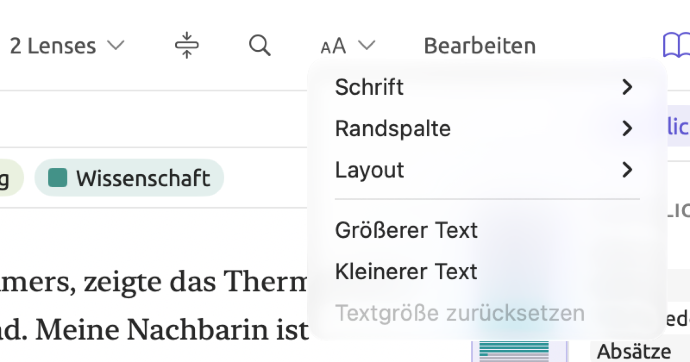
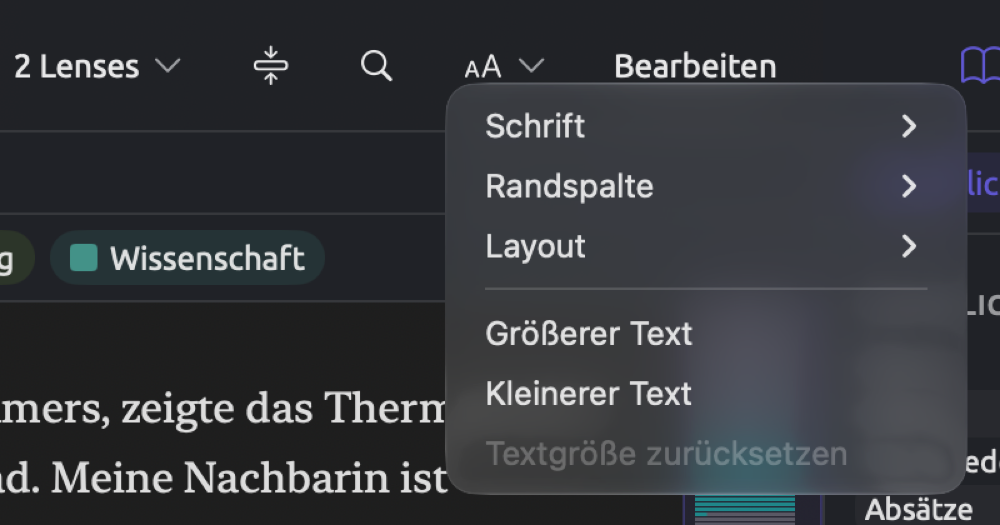
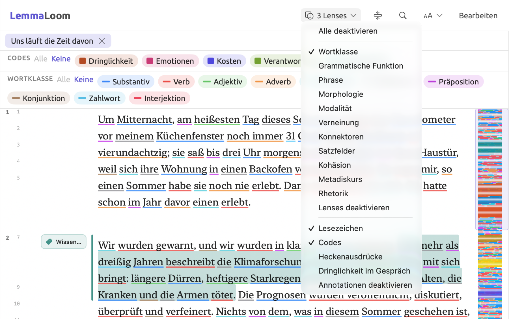
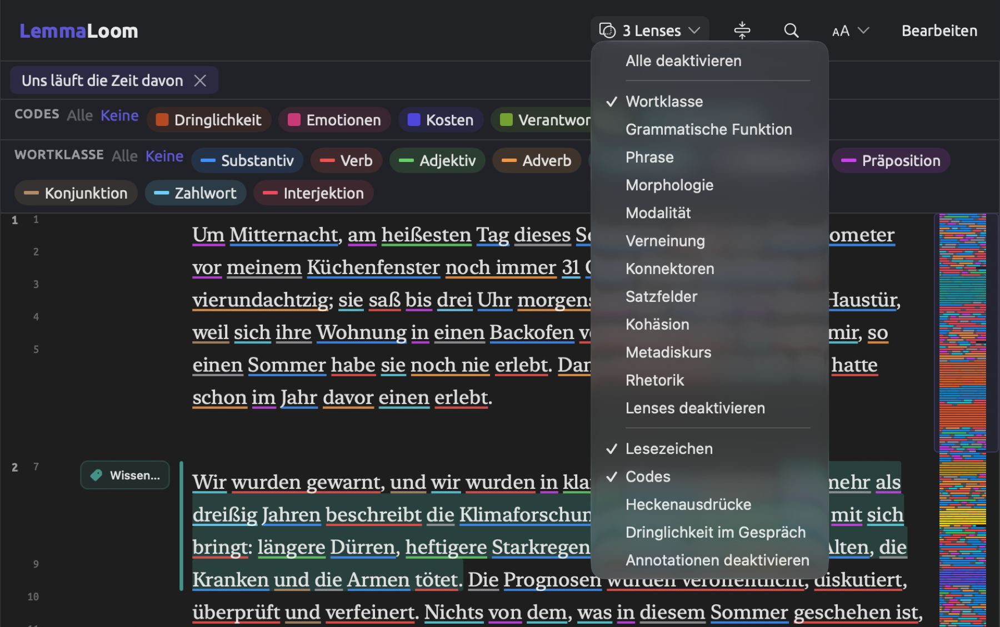
In jedem neuen Dokument sind zwei Lenses aktiviert, Codes und Lesezeichen, die Ihre Kodierungen und Lesezeichen als Annotationen im Text zeigen. Deshalb steht in Dokumenten, deren Lenses Sie nicht verändert haben, 2 Lenses.
Das Lens-Menü ordnet seine Lenses in Gruppen. Die erste Gruppe enthält die Lenses der Grammatikanalyse, also Wortklasse, Grammatische Funktion und alle weiteren, die es für die Sprache des Dokuments gibt. Danach folgt Lenses deaktivieren, das die darüber aufgeführten Lenses und alle Abfrage-Lenses deaktiviert. Dann kommen Ihre eigenen Analysatoren und Analysatoren deaktivieren. Am Ende stehen Lesezeichen, Codes, die Wörterbücher und Abfrage-Lenses des Projekts und Annotationen deaktivieren, das diese letzte Gruppe deaktiviert. Ein Klick auf einen Eintrag aktiviert oder deaktiviert ihn.
Jede Lens zeigt ihre Legende in einer Zeile über dem Dokument, als Reihe farbiger Aspekt-Lenslets. Ein Klick auf ein Lenslet deaktiviert oder aktiviert seinen Aspekt. Am Anfang der Legende steht der Name der Lens, gefolgt von Alle und Keine, mit denen Sie alle Aspekte aktivieren beziehungsweise deaktivieren. Eine Lens kann mehrere Farben haben, und vielleicht möchten Sie nur eine davon sehen. Klicken Sie dazu mit der rechten Maustaste auf das gewünschte Lenslet und wählen Sie Nur dies aktivieren.
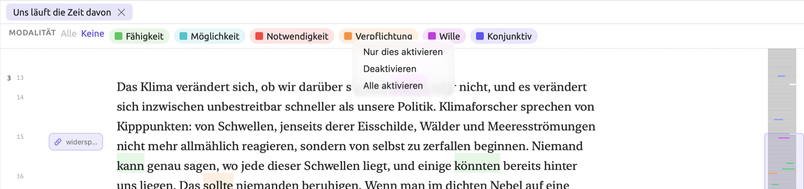
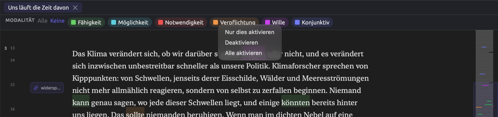
Der Inspektor
Der Inspektor bezieht sich auf das Dokument im aktiven Tab. In ihm sehen Sie sich das Dokument, mit dem Sie arbeiten, genauer an. Vier Symbole an seinem oberen Rand stehen für seine Tabs. Das Buch steht für Text, die Zeile aus Wörtern mit Abständen für Grammatik. Das Etikett steht für Kodierung, die vier Quadrate für Multimodus. Halten Sie den Mauszeiger auf ein Symbol, um seinen Namen zu sehen, oder verwenden Sie den Menüeintrag Darstellung ▸ Inspektor mit seinen Kurzbefehlen.
Jeder Tab ist in mehrere Facetten gegliedert. Kapitel 10, Der Text-Inspektor, Kapitel 11, Der Grammatik-Inspektor, Kapitel 13, Codes auswerten und Kapitel 14, Skizzenraum erklären die einzelnen Facetten. Zwischen den Facetten wechseln Sie mit der Reihe von Schaltflächen unter den Symbolen.
| Tab | Kurzbefehl | Facetten | Wofür |
|---|---|---|---|
| Text | ⌥⌘1 | Überblick, Details, Lesezeichen | Die Statistiken des Dokuments, etwa Wortzahlen und Lesbarkeit; seine Attribute und Tags; seine Lesezeichen |
| Grammatik | ⌥⌘2 | Grammatik, Satz, Struktur, Form × Funktion, Kollokationen, Wortskizze, Diskurs | Die Grammatik des ausgewählten Wortes oder Satzes und die grammatischen Muster des ganzen Dokuments |
| Kodierung | ⌥⌘3 | Codes, Kodierungen, Verknüpfungen, Code-Statistik, Porträt, Code-Skizze | Das Codesystem, die Kodierungen und Verknüpfungen dieses Dokuments und Statistiken dazu |
| Multimodus | ⌥⌘4 | Skizzenraum, Abfrage | Vergleiche, wie ein Wort in verschiedenen Codes oder Attributwerten gebraucht wird, und Abfragen über dieses Dokument |
Die Facette Grammatik arbeitet mit dem ausgewählten Wort, die Facette Satz mit dem ausgewählten Satz. Solange nichts ausgewählt ist, zeigen sie Ein Wort auswählen beziehungsweise Einen Satz auswählen.
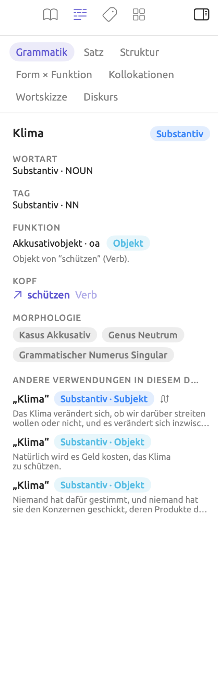
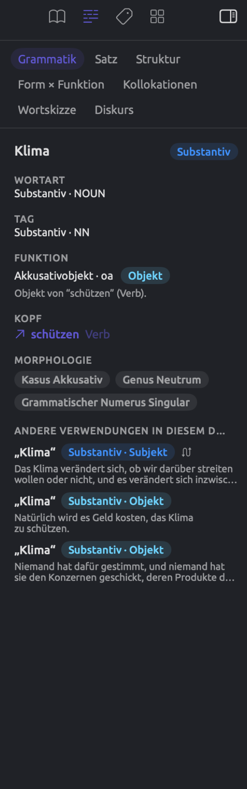
Tab, Facette und Breite des Inspektors werden für jedes Dokument einzeln gespeichert. Enthält der aktive Tab eine Detailansicht oder ein Set, schließt sich der Inspektor, und deren Werkzeuge erscheinen stattdessen im Lesebereich. Wenn Sie ein Dokument in einem anderen Fenster öffnen, hat dieses Fenster einen eigenen Inspektor.
Das Fenster einrichten
Wenn Sie nur lesen möchten, blenden Sie die Seitenbereiche aus und nutzen so das ganze Fenster. Die Schaltflächen für Seitenleiste und Inspektor liegen in der oberen Symbolleiste des Fensters. Die Schaltfläche für die Seitenleiste sitzt oben links direkt neben den Fensterknöpfen, die für den Inspektor oben rechts. Das Menü Darstellung enthält die entsprechenden Befehle:
| Befehl | Kurzbefehl |
|---|---|
| Darstellung ▸ Seitenleiste ein-/ausblenden | ⌃⌘S |
| Darstellung ▸ Inspektor ein-/ausblenden | ⌃⌘I |
Durch Ziehen der Trennlinie zwischen Leseansicht und Seitenleiste oder Inspektor ändern Sie deren Breite. Der Inspektor kann bis zu zwei Drittel des Fensters einnehmen. So ist Platz für eine breite Tabelle oder ein langes Satzdiagramm. Ob der Inspektor ausgeblendet war, merkt sich jedes Dokument einzeln. Tabs von Detailansichten und Sets zeigen ihre Werkzeuge im Lesebereich; dort sind die Schaltfläche des Inspektors und Darstellung ▸ Inspektor ein-/ausblenden deshalb deaktiviert.
Codes vergeben
Das Kodieren besteht aus zwei Schritten, dem Anlegen der Codes und ihrer Vergabe an Textstellen. Codes legen Sie in der Facette Codes des Inspektors oder im Codebuch an. An Textstellen vergeben Sie sie mit der Code-Palette.
Einen Code anlegen
Das Codebuch des Projekts „Klimadebatte“ enthält fünf Themencodes auf oberster Ebene. Jeder steht für eines der Themen, die diese Studie untersucht, nämlich „Dringlichkeit“, „Emotionen“, „Kosten“, „Verantwortung“ und „Wissenschaft“. Einige dieser Codes haben Untercodes, die beschreiben, in welchen Formen das jeweilige Thema in den Texten auftritt. Beispiele sind „Kipppunkte“ und „Fristen“ unter „Dringlichkeit“ sowie „Angst“ und „Hoffnung“ unter „Emotionen“. Außerdem gibt es einen sechsten Code auf oberster Ebene, „Sprecher“, der die drei Sprecher in „Radiodebatte“ enthält, nämlich „Moderation“, „Aktivistin“ und „Skeptiker“.
So legen Sie einen neuen Code an:
- Öffnen Sie ein Dokument.
- Klicken Sie im Inspektor auf den Tab Kodierung (⌥⌘3) und dann auf Codes.
- Klicken Sie auf + rechts neben Codesystem.
- Geben Sie im Dialog Neuer Code unter Name den Namen ein.
- Klicken Sie unter Farbe auf eine Farbe. Codes ohne Farbe erscheinen in der Akzentfarbe des Themas. Wählen Sie eine Farbe, wenn Sie mehrere Codes verwenden möchten.
- Lassen Sie Format auf Hervorheben und Geltungsbereich auf Projekt stehen und klicken Sie auf Sichern.
Der Dialog hat noch weitere Felder; Kapitel 7, Kodieren beschreibt alle Optionen. Format kann auch Unterstreichen oder Umrahmt sein. Geltungsbereich kann den Code auf ein Dokumentset oder ein Dokument beschränken. Tags versieht Ihre Codes mit Schlagwörtern. Über Attribute erhalten die einzelnen Kodierungen eines Codes eigene Werte. Die Beschreibung hält fest, was ein Code bedeutet, und gibt Richtlinien dafür, wann er zu vergeben ist.
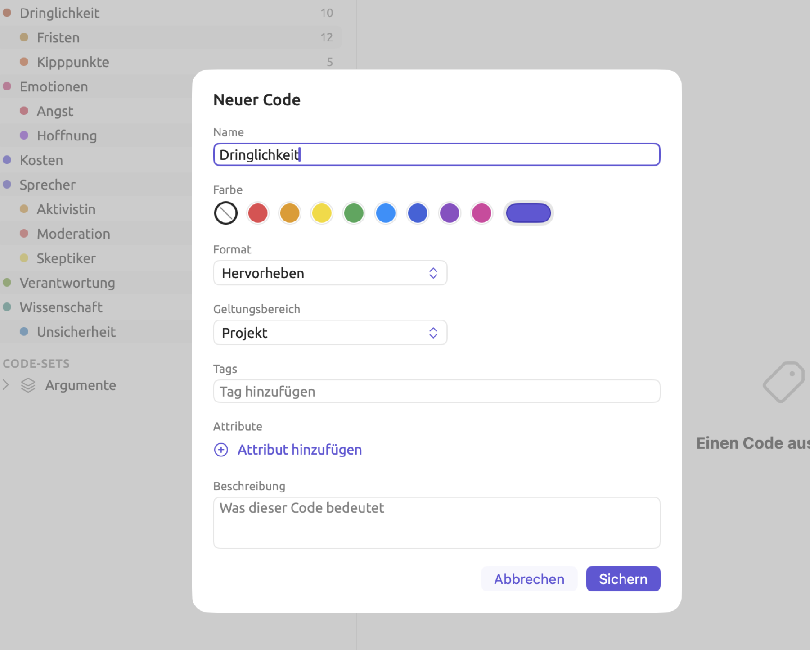
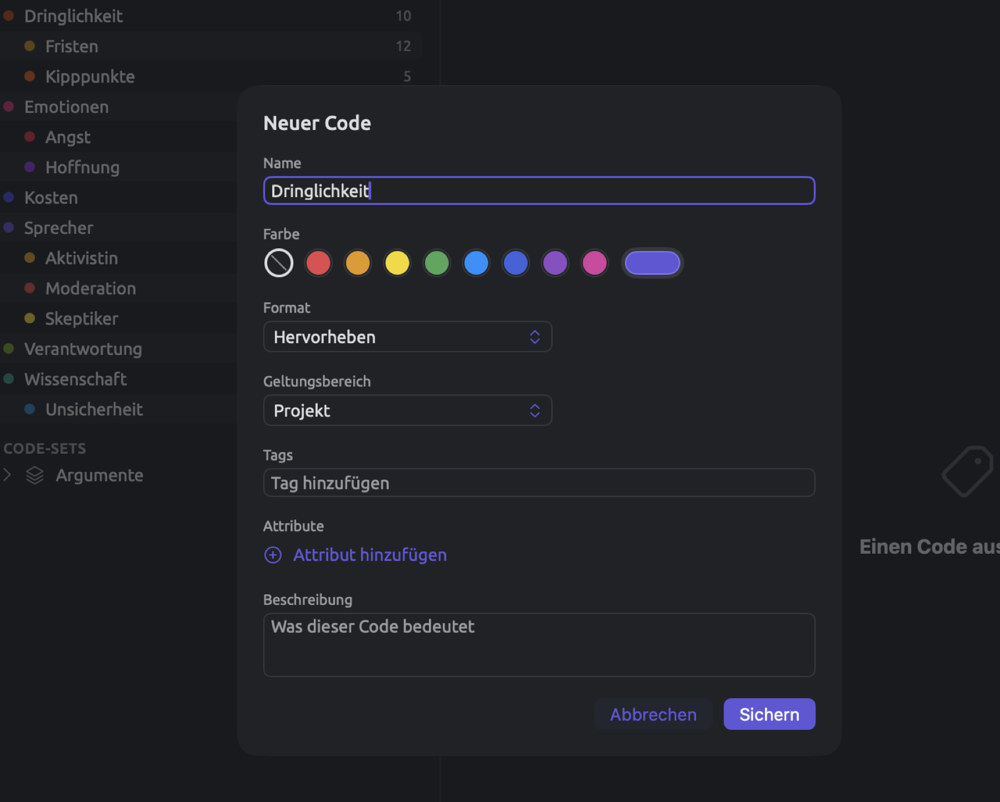
Mit Untercodes teilen Sie allgemeine Themen in Unterthemen auf, die in Ihrem Material in verschiedenen Formen auftreten. Klicken Sie dazu in der Liste Codes mit der rechten Maustaste auf einen Code und dann auf Untercode hinzufügen.
Die Codes erscheinen auch im Bereich Codebuch des Projektregals. Dort fügt die Schaltfläche Code hinzufügen unten an der Liste weitere Codes hinzu. Sie können Codes auch über Projekt ▸ Code hinzufügen in der Menüleiste anlegen; der Befehl öffnet denselben Dialog Neuer Code.
Eine Textstelle kodieren
Der vierte Absatz von „Uns läuft die Zeit davon“ nennt drei Ziele, „Netto-Null bis 2050. Kohleausstieg bis zum Ende des Jahrzehnts. Halbierung der Emissionen bis 2030.“ Alle drei nennen ein Datum, bis zu dem etwas geschehen muss; daher tragen sie den Code „Fristen“. Die Abbildung unten zeigt einen späteren Satz desselben Absatzes, ausgewählt und mit geöffneter Code-Palette. Der Satz lautet „Eine Frist, die erst abläuft, wenn alle heutigen Amtsträger im Ruhestand sind, ist überhaupt keine Frist.“
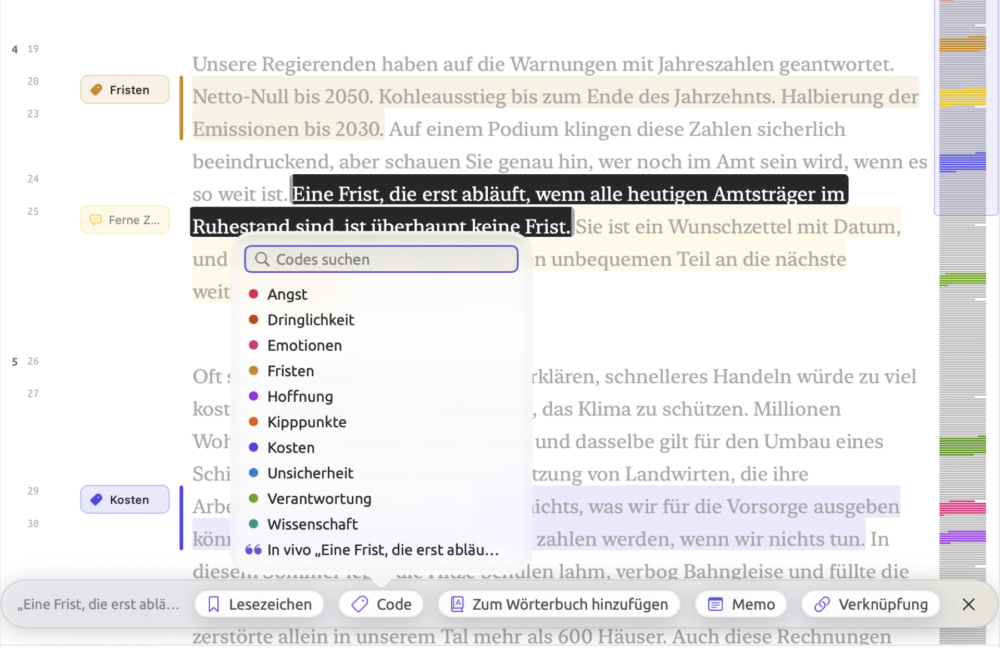
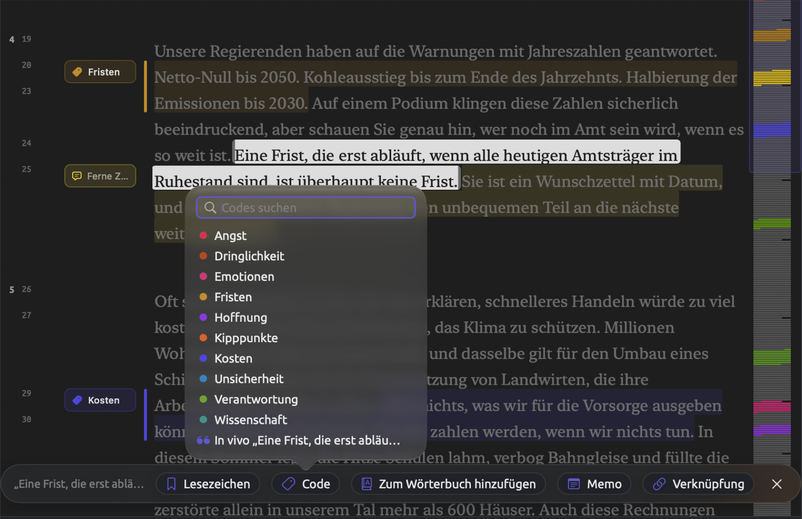
So kodieren Sie eine Textstelle:
- Wählen Sie in der Leseansicht die Textstelle aus, die Sie kodieren möchten. Um einen ganzen Absatz oder Satz zu kodieren, klicken Sie stattdessen auf seine Nummer in der Randspalte.
- Klicken Sie in der Auswahlleiste unten in der Leseansicht auf Code, oder wählen Sie Dokument ▸ Code (⇧⌘C).
- Klicken Sie in der Palette auf den Code.
Sobald ein Code an eine Textstelle vergeben ist, nimmt die Textstelle die Farbe des Codes an. Daneben erscheint in der Randspalte ein passender Balken. In der Facette Codes steigt die Zahl neben dem Code um eins. Die Palette bleibt geöffnet, bis Sie Esc drücken; Sie können einer Textstelle also mehrere Codes geben.
Beim Öffnen der Palette erhält das Feld Codes suchen automatisch den Fokus. Wenn Sie einen Teil eines Namens eingeben, sucht LemmaLoom unter den vorhandenen Codes nach passenden Treffern. Der Zeilenschalter vergibt den ersten Treffer; trägt die Textstelle diesen Code schon, entfernt der Zeilenschalter die Kodierung wieder. Wenn Sie etwas anderes vergeben möchten, gehen Sie mit den Pfeiltasten (↑ und ↓) durch die Treffer, bevor Sie den Zeilenschalter drücken. Gibt es keinen Code mit dem eingegebenen Namen, erscheint Code „…“ hinzufügen; wenn Sie diesen Eintrag wählen, wird ein neuer Code mit dem eingegebenen Namen angelegt und vergeben.
Der letzte Eintrag der Liste ist In vivo „…“. Statt einen vorhandenen Code zu vergeben, legt diese Option ad hoc einen Code an und vergibt ihn sofort. Ein solcher Code ist nach dem Inhalt der Auswahl benannt. Dokument ▸ In-vivo-Code (⇧⌘V) tut dasselbe, ohne die Palette zu öffnen.
Um in einem indizierten Dokument ein einzelnes Wort zu kodieren, wählen Sie es mit einem Klick aus. Klicken Sie dann in der Auswahlleiste auf Code und wählen Sie den gewünschten Code in der Palette.
Einen Code von einer Textstelle zu entfernen, funktioniert ähnlich wie das Vergeben. Wählen Sie die Textstelle erneut aus, zum Beispiel mit einem Klick auf ihren Balken in der Randspalte, und öffnen Sie dann die Palette. Codes, die die Textstelle bereits trägt, haben ein Häkchen. Ein Klick auf einen solchen Code entfernt alle Kodierungen dieses Codes, die sich mit der aktuellen Auswahl überschneiden.
Wenn Sie es sich anders überlegen, nimmt Bearbeiten ▸ Code anwenden widerrufen (⌘Z) den letzten Schritt zurück. Nach dem Entfernen eines Codes heißt der Befehl stattdessen Kodierung löschen widerrufen. In beiden Fällen stellt ⇧⌘Z den Schritt wieder her. Mehr dazu, was sich widerrufen und wiederherstellen lässt, finden Sie in Kapitel 23, Widerrufen und Wiederholen.
Codes können selbst Attribute haben. Bevor ein Code mit Attributen an eine Textstelle vergeben wird, fragt ein kleiner Dialog nach den Werten dieser Attribute. Wie Sie Textstellen mit solchen Codes kodieren, erklärt Kapitel 7, Kodieren. Dort geht es außerdem um Memos, Verknüpfungen und Lesezeichen.
Wo die Arbeit gespeichert wird
In den meisten Fällen speichert LemmaLoom Ihre Änderungen automatisch. In zwei Fällen müssen Sie eine Änderung jedoch selbst speichern, nämlich bei Abfragen und beim Bearbeiten des Textes eines Dokuments. Wenn Sie den Text eines Dokuments bearbeiten, müssen Sie auf Sichern klicken, damit LemmaLoom die Änderung speichert. Außerdem gehen Abfragen, die Sie nicht gesichert haben, verloren, wenn Sie LemmaLoom beenden.
Die Bibliothek, die all das enthält, ist ein Ordner namens LemmaLoom.lemmadb im Container der Anwendung, der im Library-Ordner Ihres Benutzerordners liegt:
~/Library/Containers/app.LemmaLoom/Data/Documents/LemmaLoom.lemmadb
Der Finder blendet den Library-Ordner in Ihrem Benutzerordner aus. Um dorthin zu gelangen, wählen Sie im Finder Gehe zu ▸ Gehe zum Ordner … (⇧⌘G) und setzen Sie den Pfad ein.
Ihre gesamte Arbeit in LemmaLoom liegt in einer einzigen Bibliothek. Dazu gehören Dokumente, Projekte, Indizierungsergebnisse, Codes, Kodierungen, Memos, Verknüpfungen, Lesezeichen, Sets, Gruppen, Attribute, Wörterbücher, gesicherte Abfragen und Ihre eigenen Analysatoren. Von jedem importierten PDF-Dokument speichert die Bibliothek nur den Text und den Dateinamen. Von jeder importierten Webseite behält LemmaLoom nur den Text und die URL. Von importierten Audio- und Videoaufnahmen behält LemmaLoom das Transkript und eine Kopie der Datei selbst. Schließlich speichert die Bibliothek Ihre Favoriten, die in jedem Projekt geöffneten Tabs und Ihre Position in jedem Dokument. Ihre Einstellungen aus dem Einstellungsfenster von LemmaLoom liegen auf dem Mac, wie Wo Einstellungen gespeichert werden in Kapitel 24, Einstellungen und Darstellung beschreibt.
Wenn Sie ein Projekt auf einen anderen Rechner bringen oder einfach an anderer Stelle sichern möchten, bietet LemmaLoom Möglichkeiten zum Austausch und Export von Projekten (siehe Kapitel 22, Austausch und Export). Ablage ▸ Exportieren ▸ LemmaLoom-Projekt exportiert Ihr Projekt als komprimiertes .llz-Archiv mit den Dokumenten, ihren Kodierungen und ihrer Indizierung sowie allen zugehörigen Audio- und Videoaufnahmen; das Archiv bewahrt alles. Ablage ▸ Importieren ▸ LemmaLoom-Archiv importiert solche Archive wieder in LemmaLoom. Ablage ▸ Exportieren ▸ REFI-QDA-Projekt exportiert Ihr Projekt im Austauschformat REFI-QDA; Software, die diesen Standard unterstützt, kann eine solche Datei öffnen. Dieses Format eignet sich am besten für Projekte, die LemmaLoom verlassen und in kompatibler Software geöffnet werden sollen.
Sie können den Bibliotheksordner von LemmaLoom von Hand kopieren, um ihn zu sichern oder an einen anderen Ort zu bringen. Beenden Sie zuerst LemmaLoom. Kopieren Sie dann den ganzen Ordner LemmaLoom.lemmadb.
Datenschutz
Hilfe ▸ Feedback senden öffnet ein Fenster, in dem Sie Ihre Nachricht schreiben. Wenn Sie fertig sind, übergibt ein Klick auf E-Mail verfassen die Nachricht als neue E-Mail an Ihr Mailprogramm. Dort können Sie die Nachricht vor dem Senden noch bearbeiten. Systeminformationen einschließen ist anfangs ausgewählt; die Option fügt Ihre Versionen von LemmaLoom und macOS, den Prozessortyp, die Größe des Arbeitsspeichers und die Sprache der Benutzeroberfläche von LemmaLoom hinzu. Der Text unter der Option nennt genau, was hinzugefügt wird.

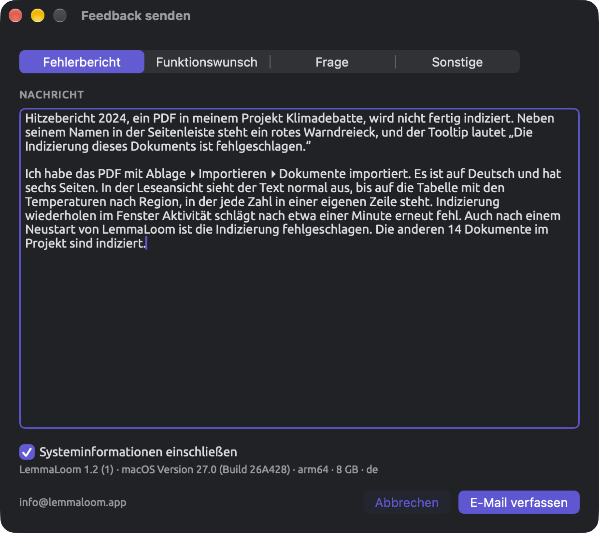
In ein .llz-Archiv oder ein REFI-QDA-Projekt exportiert LemmaLoom den vollständigen Inhalt jedes Dokuments.
Vom Import zur ersten Analyse
Eine Analyse beginnt damit, dass Sie Ihre Texte in LemmaLoom importieren und bestimmte Eigenschaften dieser Texte festhalten. Danach teilen Sie die Texte in Sets auf und kodieren sie; anschließend untersuchen Sie die Unterschiede zwischen den Sets. Am Ende dieser Analyse von „Klimadebatte“ stehen die Wörter, die die Texte der Aktivisten von denen der Skeptiker unterscheiden.
Viele Texte importieren
Das Projekt „Klimadebatte“ enthält elf Meinungstexte. Sechs stammen von den Aktivisten, darunter „Brief vom Klimastreik“, die übrigen fünf von den Skeptikern, darunter „Netto-Null wird teuer“. Um beide Seiten auseinanderzuhalten, verwendet das Projekt zwei Sets und das Attribut „Haltung“.
So importieren Sie mehrere Texte:
- Wählen Sie Ablage ▸ Importieren ▸ Dokumente (⇧⌘I).
- Wählen Sie alle Dateien aus und klicken Sie auf Öffnen.
- Der Dialog Dokument importieren erscheint einmal für jede Datei und zeigt oben rechts ihre Position an, etwa 1 von 10. Prüfen Sie jeden Dialog und klicken Sie auf Importieren.
Attributwerte können Sie in jedem Dialog eintragen. Sie können einen gemeinsamen Wert aber auch in der Attributtabelle mehreren Dokumenten zugleich zuweisen; wie das geht, steht unter Attributwerte eintragen weiter unten. Den Fortschritt der Indizierung verfolgen Sie unter Fenster ▸ Aktivität (⌥⌘0) oder an den Fortschrittsringen in der Seitenleiste. Bis auf die Schlüsselwortliste setzen die folgenden Schritte keine Indizierung voraus (siehe Zwei Sets über Schlüsselwörter vergleichen weiter unten).
Attributwerte eintragen
Im Projekt „Klimadebatte“ haben alle vier Attribute in jedem Dokument einen Wert. In allen sechs Dokumenten der Aktivisten hat „Haltung“ zum Beispiel den Wert „Aktivismus“. Ein einziger Befehl Wert festlegen ▸ Haltung in der Attributtabelle genügt, um diesen Wert allen sechs zuzuweisen. Andere Werte unterscheiden sich von Dokument zu Dokument, etwa die Reichweite; diese tragen Sie einzeln in die Tabelle ein.


So tragen Sie Werte für viele Dokumente auf einmal ein:
- Wählen Sie Projekt ▸ Attribute, oder klicken Sie unter Projekte mit der rechten Maustaste auf das Projekt und wählen Sie Attribute. Die Attributtabelle öffnet sich in einem eigenen Fenster.
- Aktivieren Sie in der Tabelle die Markierungsfelder neben den Dokumenten, die einen Wert gemeinsam haben.
- Wählen Sie Wert festlegen und dann das Attribut, wählen oder tippen Sie den Wert im Dialog, der sich öffnet, und klicken Sie auf Anwenden.
- Deaktivieren Sie die Markierungsfelder dieser Dokumente, aktivieren Sie die der Dokumente mit dem nächsten gemeinsamen Wert, und legen Sie ihn auf dieselbe Weise fest.
- Werte, die sich von Dokument zu Dokument unterscheiden, tippen Sie einzeln in die Spalte des Attributs.
Sets bilden
Ein Set ist eine benannte Sammlung von Dokumenten. Mit Sets teilen Sie LemmaLoom üblicherweise mit, welche Dokumente Ihre Analyse berücksichtigen soll. Das Projekt „Klimadebatte“ enthält die Sets „Aktivisten“ und „Skeptiker“. Jedes Set enthält die Texte einer Seite. Eine Abfrage kann die Sets vergleichen, oder Sie führen Abfragen in jedem Set einzeln aus. Intelligente Sets haben Bedingungen. Erfüllt ein Dokument diese Bedingungen, fügt LemmaLoom es automatisch dem intelligenten Set hinzu. So gehören zum Beispiel alle Dokumente, deren Attribut „Reichweite“ einen Wert von mindestens 100.000 hat, zum intelligenten Set „Große Reichweite“. Mehr zu Sets im Allgemeinen (einschließlich intelligenter Sets), Gruppen, Tags und Attributen finden Sie in Kapitel 8, Sets, Gruppen, Tags und Attribute.


So bilden Sie ein Set aus Dokumenten:
- Klicken Sie im Abschnitt Dokumente der Seitenleiste auf das erste Dokument und dann mit gedrückter Befehlstaste (⌘) auf die übrigen.
- Klicken Sie mit der rechten Maustaste auf eines der ausgewählten Dokumente und wählen Sie Zu Set hinzufügen ▸ Neues Set aus Dokumenten.
- Unter Sets erscheint ein Set namens „Neues Set“, dessen Name zur Eingabe bereitsteht. Geben Sie einen Namen ein und drücken Sie den Zeilenschalter.
Mehrere Texte kodieren
Mehrere Texte kodieren Sie genauso wie einen einzelnen; wie das geht, steht unter Eine Textstelle kodieren weiter oben in diesem Kapitel.
Die Kodierung eines Textes ansehen
Im Projekt „Klimadebatte“ hat „Uns läuft die Zeit davon“ 13 Kodierungen. Je zwei davon entfallen auf „Kosten“, „Verantwortung“ und „Kipppunkte“.
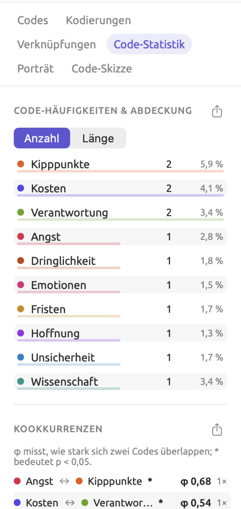
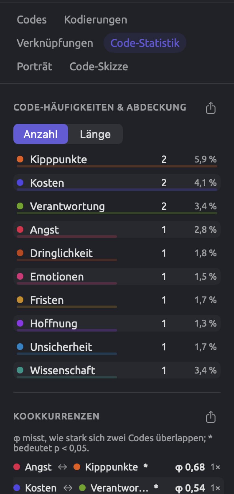
So sehen Sie sich die Codes eines Dokuments an:
- Machen Sie das Dokument zum aktiven Dokument.
- Klicken Sie im Inspektor auf den Tab Kodierung.
- Klicken Sie auf Code-Statistik.
Code-Häufigkeiten & Abdeckung in der Facette Code-Statistik listet alle Codes auf, die im aktuellen Dokument vorkommen, mit ihren Häufigkeiten und Prozentwerten. Jede Zeile gibt an, wie viele Textstellen den Code tragen und welchen Anteil am Text des Dokuments sie einnehmen, die sogenannte Abdeckung des Codes. Ein Klick auf eine Zeile zeigt eine ihrer Textstellen in der Leseansicht. Über der Liste sortiert Anzahl die Codes und skaliert ihre Balken nach der Zahl der Textstellen; Länge sortiert und skaliert sie nach der Menge des abgedeckten Textes. Kookkurrenzen darunter zeigt, wie oft diese Codes gemeinsam vorkommen; Kapitel 13, Codes auswerten beschreibt diesen Abschnitt und die projektweiten Tabellen im Projektregal.
Zwei Codes, die je fünfmal vergeben sind, können sehr unterschiedlich viel Text abdecken. Die Abdeckung zeigt, welchen Anteil des Dokuments die Textstellen mit dem Code ausmachen. Sie wird nach folgender Formel berechnet:
Dabei ist die Zahl der Zeichen in den Textstellen mit dem Code und die Gesamtzahl der Zeichen im Dokument; Leerzeichen und Zeilenumbrüche zählen jeweils mit. Überschneiden sich zwei Textstellen mit demselben Code teilweise, gehen die gemeinsamen Zeichen nur einmal in ein.
„Uns läuft die Zeit davon“ umfasst zum Beispiel knapp 6.000 Zeichen, also ist . Angenommen, drei getrennte Textstellen sind mit „Dringlichkeit“ kodiert, und sie sind 150, 100 und 200 Zeichen lang. Diese Kodierung ist nur angenommen; im Beispielprojekt ist der Text anders kodiert. Da sich die Textstellen nicht überschneiden, ist , und es gilt:
Die Zeile für „Dringlichkeit“ zeigt 3 und 7,5 %. Überschneiden sich die beiden letzten Textstellen um 31 Zeichen, ist . Die Abdeckung beträgt dann , und die Zeile zeigt 7,0 %. Es bleibt bei drei Kodierungen mit „Dringlichkeit“. Kodierungen mit „Kipppunkte“ oder „Fristen“ haben eigene Zeilen. Die Zahl der Textstellen wird für jede Zeile und jeden Code getrennt gezählt.
Zwei Sets über Schlüsselwörter vergleichen
Eine Schlüsselwortliste findet die Wörter, die ein Set von Dokumenten deutlich häufiger oder seltener verwendet als ein anderes. Das Set „Aktivisten“ in „Klimadebatte“ enthält zum Beispiel eine gesicherte Schlüsselwortabfrage namens „Schlüsselwörter: Aktivisten“. Diese Schlüsselwortliste vergleicht das Set mit „Skeptiker“ und findet die Wörter, die die Sprache der Aktivisten auszeichnen. Schlüsselwortlisten beruhen auf den Häufigkeiten der Wörter, die die Indizierung gefunden hat. Die Dokumente beider Sets müssen deshalb zuerst indiziert sein.
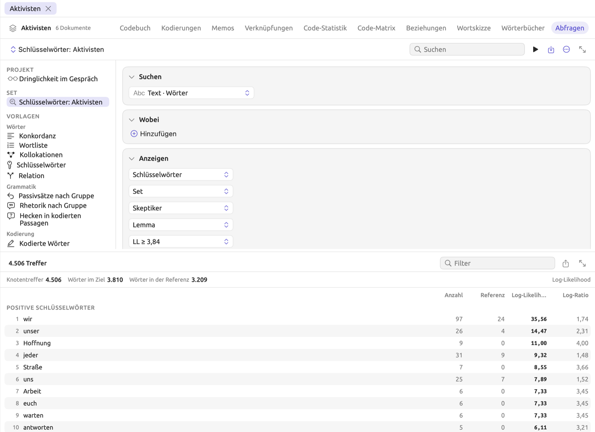
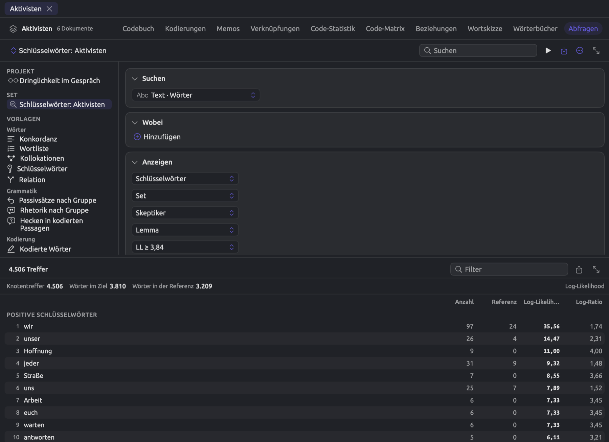
So erstellen Sie eine Schlüsselwortliste:
- Klicken Sie in der Seitenleiste unter Sets auf das erste Set. Das Set öffnet sich in einem Tab.
- Klicken Sie in der Reihe von Schaltflächen oben im Tab auf Abfragen. In einem schmalen Fenster ist die Reihe ein Menü; wählen Sie dort Abfragen.
- Klicken Sie in der Spalte links unter Vorlagen in der Gruppe Wörter auf Schlüsselwörter.
- Öffnen Sie in der Bedingung Anzeigen das Menü, das Rest des Projekts zeigt, und wählen Sie Set. Wählen Sie im Menü, das dann erscheint, das andere Set.
- Lassen Sie das Menü, das Lemma zeigt, unverändert. Dann zählen Frist und Fristen als ein Wort. Lassen Sie auch das Menü, das LL ≥ 3,84 zeigt, unverändert.
Die Ergebnisse des Vergleichs erscheinen unter dem Editor in zwei Listen, Positive Schlüsselwörter und Negative Schlüsselwörter. Positive Schlüsselwörter enthält die Wörter, die im ersten Set (dem Ziel) häufiger vorkommen als im zweiten (der Referenz). Negative Schlüsselwörter zeigt umgekehrt die Wörter, die im Ziel seltener vorkommen als in der Referenz. Über den beiden Listen steht die Gesamtzahl der Wörter des Ziels als Wörter im Ziel und die der Referenz als Wörter in der Referenz. In der Abbildung ist „Aktivisten“ das Ziel und „Skeptiker“ die Referenz. Jede Zeile der Tabelle zeigt folgende Angaben:
- Anzahl, die Zahl der Vorkommen im Ziel;
- Referenz, die Zahl der Vorkommen in der Referenz. Die Kennwerte normalisieren beide Zahlen;
- Log-Likelihood, wie stark die Daten dafür sprechen, dass der Unterschied kein Zufall ist;
- Log-Ratio, wie groß der Unterschied zwischen den beiden Sets ist, gemessen in Verdopplungen der Rate des Wortes. Die Rate ist der Anteil eines Wortes an allen Wörtern seines Sets. Bei 1 ist der Anteil des Wortes an den Wörtern des Ziels doppelt so groß wie an denen der Referenz, bei 2 viermal so groß, bei −1 halb so groß.
Angenommen, Geld macht in den Texten der Aktivisten 2 von 1.000 Wörtern aus und in den Texten der Skeptiker 1 von 1.000. Das Wort kommt im Ziel also doppelt so häufig vor wie in der Referenz, und das Verhältnis seiner Raten in Ziel und Referenz ist 2. Weil sich die Rate verdoppelt, liegt die Log-Ratio bei etwa 1. Logarithmen zur Basis 2 zählen Verdopplungen, indem sie bestimmen, mit welchem Exponenten man 2 potenzieren muss, um eine Zahl zu erhalten. Da das Verhältnis der Raten im Beispiel ist, ist der Logarithmus 1. Ein Verhältnis von ergibt umgekehrt −1.
Kapitel 16, Abfrageergebnisse und Statistik erklärt beide Kennwerte an Beispielen und beschreibt ausführlich, wie Sie Schwellenwerte wählen. Die Zeilen sind nach dem Wert Log-Likelihood sortiert. Ein hoher Wert zeigt, dass ein Unterschied wahrscheinlich andere Gründe als bloßen Zufall hat.
Werden noch Dokumente indiziert, erscheint neben der Trefferzahl eine zusätzliche Angabe, wie viele Dokumente einbezogen sind, etwa 4 von 6.

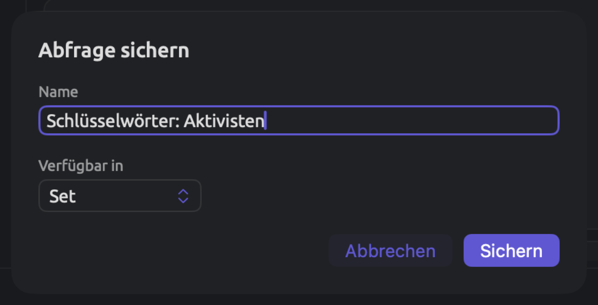
So sichern Sie Ihre Abfrage:
- Klicken Sie auf die Schaltfläche Sichern (ein Quadrat mit einem Pfeil, der hineinzeigt) und wählen Sie Sichern.
- Geben Sie einen Namen ein und lassen Sie Verfügbar in auf Set stehen.
- Klicken Sie auf Sichern.
Die gesicherte Abfrage wird im Set gespeichert.
Die Textstellen hinter einem Schlüsselwort lesen
Im Projekt „Klimadebatte“ steht Hoffnung auf der Schlüsselwortliste der Aktivisten. Alle neun Vorkommen des Wortes in den Texten der Aktivisten stammen aus einem einzigen Text, „Hoffnung braucht Arbeit“. Mit der Suchleiste gehen Sie innerhalb eines Textes jedes Vorkommen einzeln durch:
- Öffnen Sie einen der Texte des Sets.
- Drücken Sie ⌘F und geben Sie das Wort ein. Der Text markiert den aktuellen Treffer, die Dokumentübersicht zeigt alle Treffer. Die Suchleiste zeigt, beim wievielten Treffer Sie sind. Sie findet die Buchstabenfolge überall im Text und ignoriert Groß- und Kleinschreibung. Eine Suche nach
Eisfindet daher auch meisten und Preis. Übergehen Sie solche Treffer. - Drücken Sie ⌘G oder den Zeilenschalter, um zum nächsten Treffer zu gehen (⇧⌘G geht zurück), und lesen Sie die Textstellen um die Treffer herum.
- Kodieren Sie die Textstellen, die für Ihre Fragestellung wichtig sind.
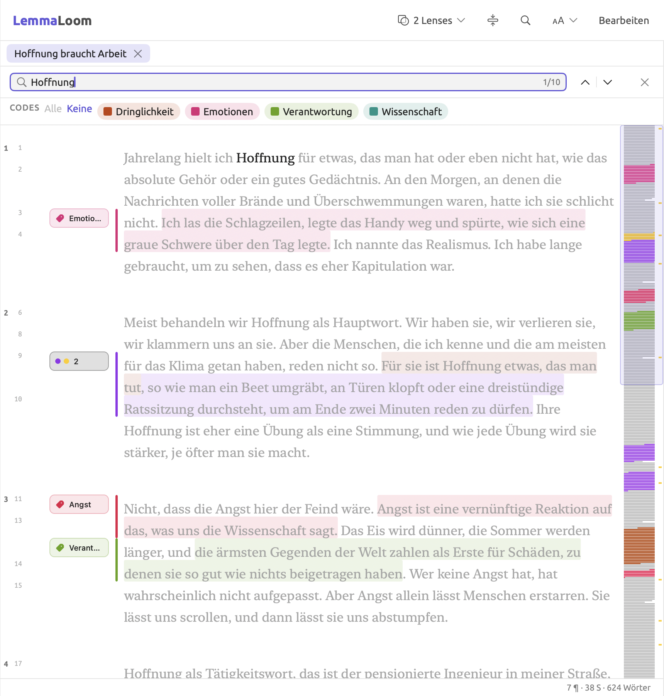
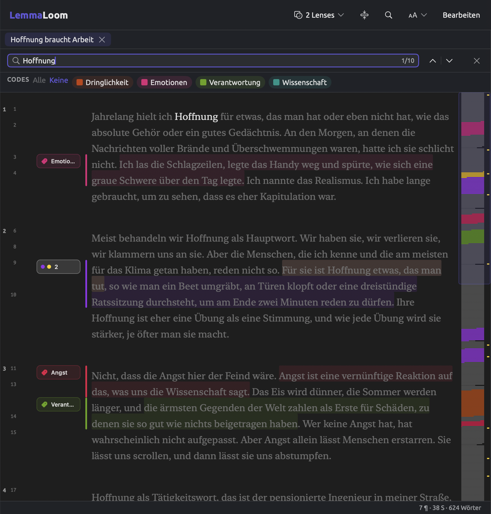
Um ein solches Muster in einem ganzen Set von Dokumenten zu finden, verwenden Sie die Vorlage Konkordanz im Bereich Abfragen des Sets. Geben Sie dazu das Wort als Lemma ein. Näheres steht unter Konkordanz in Kapitel 16, Abfrageergebnisse und Statistik.
Mehr zu Codes und zum Kodieren finden Sie in Kapitel 7, Kodieren und Kapitel 13, Codes auswerten. Wie Sie die Grammatik Ihrer Texte analysieren, beschreiben Kapitel 6, Lenses, Kapitel 11, Der Grammatik-Inspektor und Kapitel 12, Wortskizze. Wie Sie eine Abfrage aufbauen, erklärt Kapitel 15, Eine Abfrage erstellen.